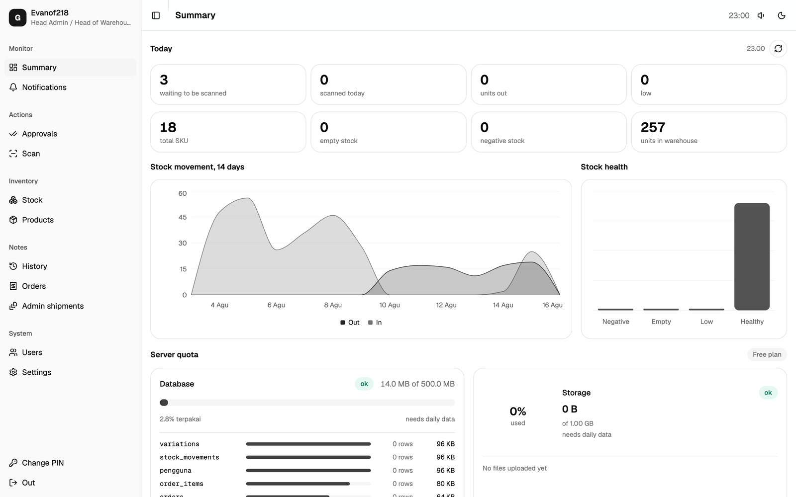
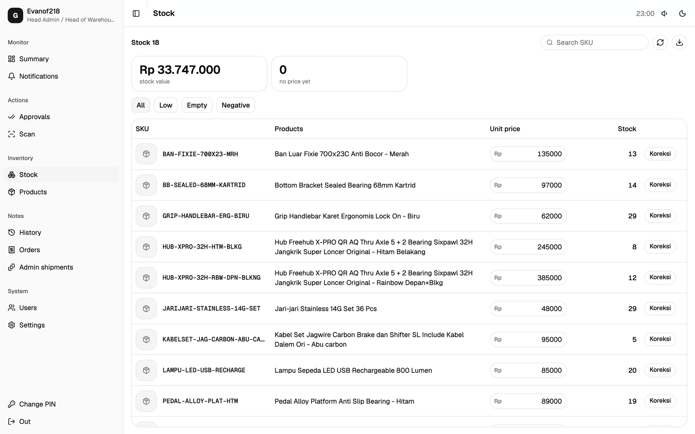
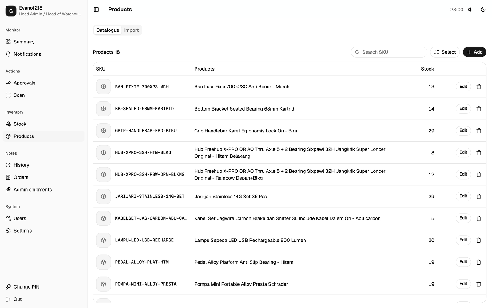
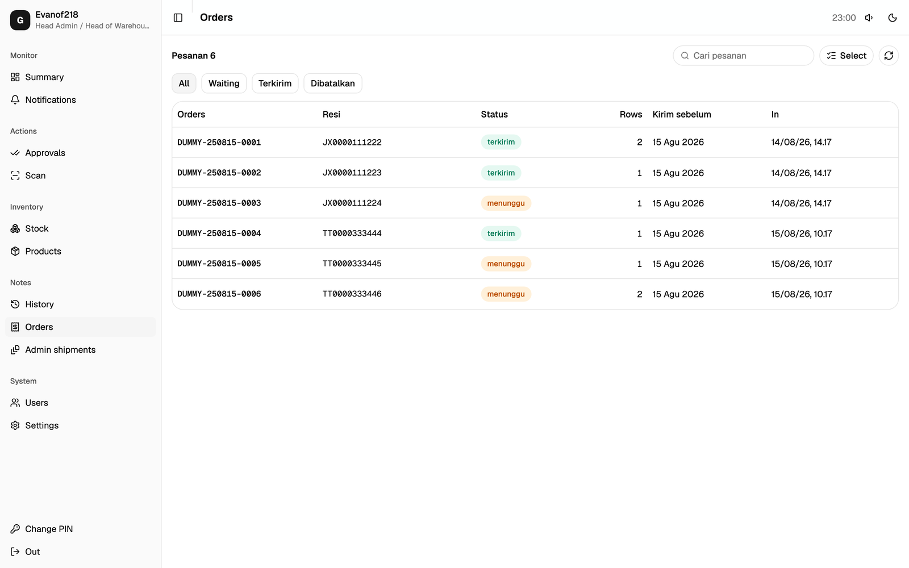

Warehouse Ops
Warehouse app for an Indonesian bike-parts seller on Shopee and TikTok — shipping-label PDFs become pick lists in the browser, and every stock change is an approved entry in an append-only ledger.
The Client
An Indonesian seller of bicycle parts, shipping orders daily from two online storefronts. Their existing tool was a prototype that could read labels but could not be trusted with stock: counts were edited in place, so a mistake left no trace and nobody could say who made it. They needed the same daily flow with an auditable record underneath it.
What It Does
The daily admin uploads the day's shipping-label PDFs. The app parses them in the browser into orders and line items, matching each line to a SKU in the catalogue. Warehouse staff then scan and pick against those orders on a phone, and the head admin approves anything that changes stock — goods received, corrections, stock counts, returns — before it lands.
Features
- Shipping-label PDFs parsed client-side, no upload to a server
- Scan-and-pick flow on a phone camera, safe to repeat without double-counting
- Stock derived from an append-only ledger, never edited in place
- Approval queues for goods-in, catalogue edits, stock counts, and returns
- Every decision recorded immutably, with the person and the reason
- Three roles on one account each, with the daily admin barred from scanning
- Uncounted stock reads as "not yet counted" rather than zero
- Label lines with no SKU resolve through a name book that learns permanently
Tech Stack
- React 19, TypeScript, Vite
- Tailwind CSS, shadcn/ui
- Supabase (Postgres, row-level security, RPCs)
- Cloudflare
Access
Internal app for the client's warehouse and admin staff. Not publicly available.



